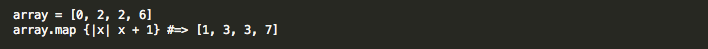
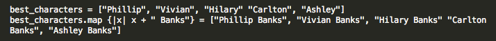

#map, #awesome
10:42 AM -- 8/9/2014
Thomas Abend
This week at DBC we've been diving back into the world of ruby. One of the features that I like about ruby is it's variety of built in enumerable methods. These functions like inject, select, map are really useful when trying to manipulate and use arrays and hashes but can be called on any class that has an #each method. In general there isn't anything that these functions do that you couldn't do with an each iterator or even a "for loop" and some extra code, but having the functionality built into these methods makes it much easier to put things together quickly and simply.
The #map method is one of the most useful enumerators. Map works by taking a block of code and running that block on each object in your collection. It then outputs a new collection.
For example, if you had an array of numbers you could perform math on each of the elements of that array with map.
This isn't limited to numbers. Let's say you had an array of your favorite characters from the Fresh Prince. Suddenly you realized you forgot their last names! Map to the rescue:
#map also has a destructive version fo the method, so calling best_characters.map! would not only return the corrected array, it would modify the best_characters to include the corrected names.
Also interesting is that map has another name: collect. Collect is another enumerable that does literally the exact same thing as map. The method so cool, it was called twice.
Now so far we've just seen what map does, but when would you actually want to use this? Well, any time you want to change a lot of data at the same time map is useful. Maybe you have a list of names that you got from some form and some people forgot to capitalize their first names? Using #map and #capitalize could easily fix this. If you had an array of numbers but wanted them as strings #map and #to_i could quickly give you the desired result. Overall, map is a great way to manipulate your data with clean, simple code.
Sources: